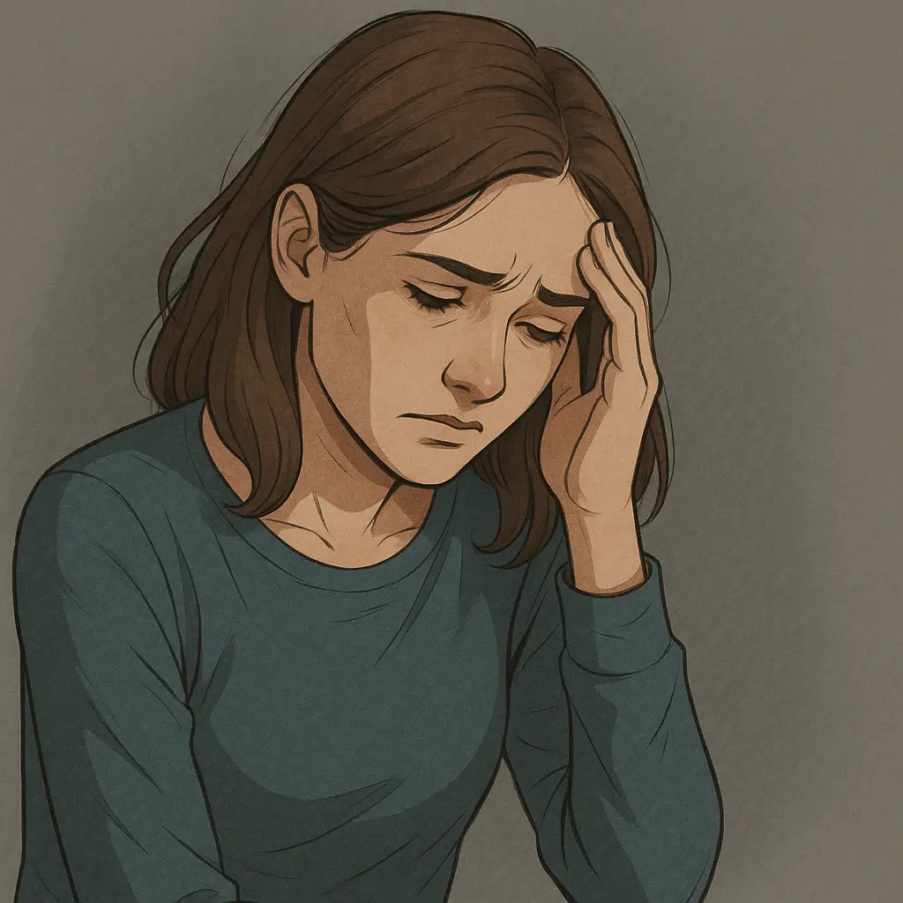

Cómo manejar la ansiedad silenciosa que nadie nota
La ansiedad silenciosa es esa tensión interna que no siempre se ve en el comportamiento externo. Puede sentirse como fatiga emocional, irritabilidad sutil, o una presión mental constante que no entienden quienes te rodean. Este artículo te ayudará a identificarla y a gestionarla con herramientas reales.
¿Qué es la ansiedad silenciosa?
Es una forma de ansiedad que no presenta síntomas externos intensos como ataques de pánico o crisis visibles. En cambio, se manifiesta a través de:
- Fatiga persistente
- Irritabilidad leve
- Dificultad para concentrarse
- Preocupaciones constantes, aunque discretas
- Desmotivación o sensación de vacío interior
Señales para reconocerla
Atenta a señales como:
- Dificultad para descansar aunque físicamente no estés cansado
- Pensamientos constantes antes de dormir
- Reacciones exageradas o irritabilidad por cosas pequeñas
- Evitar hablar sobre cómo te sientes porque “estás bien”
Estrategias para gestionarla
1. Reconocerla sin juzgarte
Aceptar que estás en un estado de ansiedad es el primer paso. No necesitas sentir mucho para que la ansiedad sea válida.
2. Agenda pausas conscientes
Incluye mini descansos de respiración o escritura entre tareas. Incluso 1 minuto de atención plena con nuestra pausa consciente puede aliviar mucho.
3. Lleva un registro diario
Usar un journal te ayuda a detectar patrones emocionales incluso cuando no lo notas al instante.
4. Aplica técnicas para frenar el bucle mental
Utiliza ejercicios como la técnica de detener pensamiento o escribir libremente 5 minutos al día.
5. Cuida tu bienestar físico
El buen sueño, la hidratación, la alimentación nutritiva y el movimiento suave (caminar, estirar) también ayudan a estabilizar la mente.
Complementa con otras herramientas útiles
- Ejercicios para calmar la mente rápido
- Afirmaciones para soltar pensamientos negativos
- Ejercicios de gratitud para mejorar tu ánimo